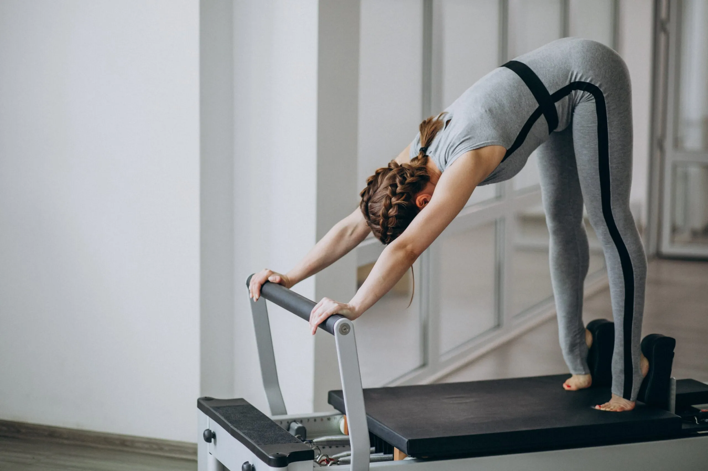

Pilates na Fisioterapia
Histórico do Pilates
O Pilates é um método de treinamento físico criado pelo Alemão Joseph Pilates e que é conhecido no mundo inteiro, visa a flexibilidade, alongamento e fortalecimento muscular, trazendo benefícios a saúde física e pode ser utilizado como recurso na reabilitação de diversas patologias.
Filho de uma naturopata e um ginasta, nasceu com diversos problemas de saúde como asma, febre reumática e raquitismo, teve grande influência de seus pais na busca de uma forma de vida saudável, com foco no equilíbrio do corpo e da mente.
Dedicou parte de sua vida para estudar meios de melhorar sua saúde, assim, conheceu e estudou diversos tipos de atividades físicas como o kung fu, o boxe, mergulho, a yoga e a ginástica, que deram a inspiração para a criação do Método Pilates.
Por conta da Primeira Guerra Mundial, foi preso e resolveu colocar os seus estudos em prática, incentivando os presos a praticarem os exercícios ao ar livre e aos que estavam acamados, começou a improvisar as molas das camas para a realização dos exercícios.
Conforme iam melhorando, aumentava o grau de dificuldade dos exercícios, promovendo assim maior ganho de flexibilidade e força, aliado a isso trabalhava a respiração para melhora da mente.
Após a guerra, retornou para a Alemanha e teve contato com o mundo da dança, onde incorporou alguns de seus conceitos e implementou algumas técnicas de construção corporal nas aulas.
Levou sua técnica para a América onde teve sucesso imediato, principalmente entre os dançarinos, que ao praticarem a técnica perceberam que os exercícios ajudava na recuperação das lesões num menor tempo.
Desenvolveu seu conceito baseado na Contrologia que “é o controle consciente de todos os movimentos musculares do corpo. É a correta utilização e aplicação dos mais importantes princípios das forças que se aplicam a cada um dos ossos do esqueleto, com o completo conhecimento dos mecanismos funcionais do corpo, e o total entendimento dos princípios de equilíbrio e gravidade aplicado a cada movimento, no estado ativo, em repouso e dormindo” – Your Health (Joseph Pilates, 1934).
Sua carreira durou cerca de 38 anos como o criador e instrutor de Pilates. Deixou um vasto legado e a cada dia crescem os adeptos dessa metodologia que traz diversos benefícios para a melhora da condição física.
Ao longo do tempo sua técnica tem sido amplamente difundida e estudada pelos mais variados profissionais, podendo também ser utilizado na reabilitação de diversas patologias e prevenção de doenças do aparelho musculoesquelético.
Pilates na Fisioterapia
O fisioterapeuta através da cinesioterapia que é um conjunto de exercícios terapêuticos responsáveis pela reabilitação de funções motoras, conhecida como a terapia do movimento, trata os pacientes para melhora da saúde e prevenção de alterações motoras.
Posturas inadequadas, prática de atividades físicas sem orientação profissional, sedentarismo, traumas podem diminuir a flexibilidade, propiciar a instalação de alterações posturais e quadros de dor recorrente, levando a um desequilíbrio do sistema musculoesquelético, propiciando lesões.
O pilates aliado à fisioterapia objetiva melhorar a flexibilidade e o fortalecimento de grupos musculares; a correção de alterações posturais e o trabalho respiratório. Está fundamentado na abordagem global do paciente que é aplicada a diversas patologias do aparelho locomotor.

Os princípios científicos e biomecânicos do método do pilates está nos exercícios de ampla flexibilidade com contrações constantes, movimentos lentos e precisos, propriocepção e concentração. São realizados em cadeias cinéticas, levando ao fortalecimento e flexibilização das cadeias.
O pilates na fisioterapia, favorece o tratamento de diversas patologias, conforme abaixo:
Uma das frases de Joseph Pilates: “Seu corpo é seu maior bem, ele guarda e reflete sua alma. Cuide dele como se fosse uma pedra preciosa e nós o lapidaremos.”
Referências:
– Apostila Pilates na conduta cinesioterapêutica – d&d pilates.
– Livro Your Health – Joseph Pilates, 1934.